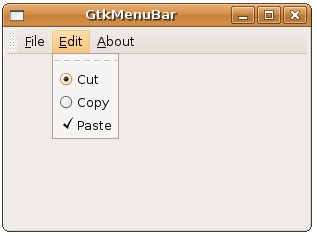
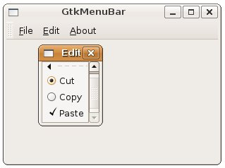

| GtkCheckMenuItem、GtkRadioMenuItem與GtkTearoffMenuItem都是GtkMenuItem的子類，GtkCheckMenuItem可以產生一個核取方塊，GtkRadioMenuItem產生單選鈕，它們的使用上與 GtkCheckButton
與 GtkRadioButton 類似。 由於GtkRadioMenuItem是單選鈕，因此必須設定其群組，第一次產生GtkRadioMenuItem時群組可設定為NULL，第二次則使用 gtk_radio_menu_item_group()取得第一個GtkRadioMenuItem的群組（GSList），然後再用以產生第二個 GtkRadioMenuIte： cutMenuItem = gtk_radio_menu_item_new_with_label(NULL, "Cut");
copyMenuItem = gtk_radio_menu_item_new_with_label( gtk_radio_menu_item_group(GTK_RADIO_MENU_ITEM(cutMenuItem)), "Copy"); GtkTearoffMenuItem是個特殊的選項，外觀為一個虛線，按下後，會使得整個GtkMenu剝離（tear off）而成為浮動選單。 您可以改寫一下 GtkMenuBar、GtkMenu 與 GtkMenuItem 中的範例，新增一個函式： ...
然後改一下main()函式中附加GtkMenuBar選項Edit的部份：GtkWidget* createEditMenuItem() { GtkWidget *rootEditItem; GtkWidget *editMenu; GtkWidget *cutMenuItem; GtkWidget *copyMenuItem; GtkWidget *pasteMenuItem; rootEditItem = gtk_menu_item_new_with_mnemonic("_Edit"); editMenu = gtk_menu_new(); cutMenuItem = gtk_radio_menu_item_new_with_label(NULL, "Cut"); copyMenuItem = gtk_radio_menu_item_new_with_label( gtk_radio_menu_item_group(GTK_RADIO_MENU_ITEM(cutMenuItem)), "Copy"); pasteMenuItem = gtk_check_menu_item_new_with_label("Paste"); gtk_menu_shell_append(GTK_MENU_SHELL(editMenu), gtk_tearoff_menu_item_new()); gtk_menu_shell_append(GTK_MENU_SHELL(editMenu), cutMenuItem); gtk_menu_shell_append(GTK_MENU_SHELL(editMenu), copyMenuItem); gtk_menu_shell_append(GTK_MENU_SHELL(editMenu), pasteMenuItem); gtk_menu_item_set_submenu(GTK_MENU_ITEM(rootEditItem), editMenu); return rootEditItem; } ... gtk_menu_bar_append(menubar, createEditMenuItem());
下圖為改寫後，Edit選單的畫面：  下圖為Edit選單成為浮動的一個畫面：  |